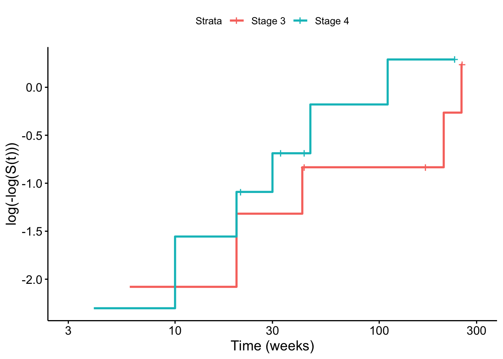

In this chapter, we will study another class of regression models, proportional hazards models (also known as “Cox regression models), for relating the survival time of an individual to explanatory variables for that individual. In particular we will
study the defining characteristics of a proportional hazards model: how explanatory variables modify the hazard function;
understand how the parameters of a proportional hazards model estimated using likelihood methods;
fit proportional hazards models in R, and interpret the R output;
study some methods for checking model assumptions.
An alternative approach to modelling the dependence of the failure time distribution on explanatory variables \(\mathbf{x}\) is through the hazard function with \[
h(t; \mathbf{x}) = \psi(\mathbf{x}; \boldsymbol{\beta}) h_0(t),
\] where \(h_0(t)\) corresponds to the hazard for an individual under the baseline conditions where \(\mathbf{x} = \mathbf{0}\) and we require \(\psi(\mathbf{x}=\mathbf{0}; \boldsymbol{\beta}) = 1\). Typically we choose \[
\psi(\mathbf{x}; \boldsymbol{\beta}) = e^{\boldsymbol{\beta}' \mathbf{x}}
\] so that \[
h(t; \mathbf{x}) = e^{\boldsymbol{\beta}' \mathbf{x}} h_0(t).
\] This is a semi-parametric model proposed by Sir David Cox 1. This work has become so widely used that his original paper is one of the most cited mathematical papers in history.
Proportional-hazards is called semi-parametric since the baseline hazard \(h_0(t)\) does not need to be specified. The dependence of the failure time \(T\) on explanatory variables \(\mathbf{x}\) is precisely modelled; but actual distribution of failure is not parametrically specified. It is particularly useful in medical situations where
it is important to know which prognostic variables have an effect and to what extent
but knowing the actual distribution of survival time is not as important.
One should also note that for two patients with covariates \(\mathbf{x_1}\) and \(\mathbf{x_2}\) we have \[\begin{align}
\frac{h(t; \mathbf{x_1})}{h(t; \mathbf{x_2})} &= \frac{e^{\boldsymbol{\beta}' \mathbf{x_1}}}{e^{\boldsymbol{\beta}' \mathbf{x_2}}} \\
&= e^{\boldsymbol{\beta}'(\mathbf{x_1}-\mathbf{x_2})}
\end{align}\] which is independent of time. Hence hazard functions for any two patients are proportional over time as the linear component of the model does not vary with time.
6.1 Which AFT models exhibit the proportional hazards property?
Suppose \(T \sim Exp(\lambda)\) then for an AFT with an exponential survival time the hazard function is \[h(t;\mathbf{x}) = \lambda e^{-\boldsymbol{\beta}' \mathbf{x}}.\] It follows that the ratio of any two hazards for two patients with covariates \(\mathbf{x_1}\) and \(\mathbf{x_2}\) is of the form above: \[
\frac{h(t; \mathbf{x_1})}{h(t; \mathbf{x_2})} = \frac{\lambda e^{-\boldsymbol{\beta}' \mathbf{x_1}}}{\lambda e^{-\boldsymbol{\beta}' \mathbf{x_2}}}
= e^{-\boldsymbol{\beta}'(\mathbf{x_1}-\mathbf{x_2})}
\]
and therefore has the proportional hazards property. (The change of sign from \(\boldsymbol{\beta}\) to \(-\boldsymbol{\beta}\) doesn’t matter: the important point is that the ratio is constant over time).
Similarly if \(T \sim Weibull(\lambda, \gamma)\) then for an AFT with a Weibull survival time, the hazard is \[h(t;\mathbf{x}) =\lambda^\gamma \gamma t^{\gamma-1}exp(-\gamma\mathbf{\beta}' \mathbf{x}).\] Hence the ratio of any two hazards for two patients with covariates \(\mathbf{x_1}\) and \(\mathbf{x_2}\) is \[
\frac{h(t; \mathbf{x_1})}{h(t; \mathbf{x_2})} = \frac{\lambda^\gamma \gamma t^{\gamma-1}\exp(-\gamma\mathbf{\beta}' \mathbf{x_1})}{\lambda^\gamma \gamma t^{\gamma-1}\exp(-\gamma\mathbf{\beta}' \mathbf{x_2})}
= e^{-\gamma\boldsymbol{\beta}'(\mathbf{x_1}-\mathbf{x_2})},
\]
which is again independent of time and therefore has the proportional hazards property. Note that because the exponential is a special case of the Weibull we only really needed to demonstrate this property for the Weibull distribution. The Weibull distribution (and hence Exponential as a special case) is the only distribution for which the corresponding AFT model has the proportional hazards property.
6.2 Parameter Estimation
Consider our typical situation where we have \(n\) individuals and for each we have observed \[\begin{align}
t_i &= \min(\textrm{Failure time}, \textrm{Time of right censoring}) \\
\delta_i &= \left\{ \begin{array}{rl}
1 & \textrm{if $i$ is observed to fail} \\
0 & \textrm{if $i$ is censored}
\end{array} \right. \\
\mathbf{x_i} &= \textrm{$p$ dimensional vector of explanatory variables}
\end{align}\] If we wish to model this with a proportional hazards model then \[\begin{align}
h(t; x) &= e^{\boldsymbol{\beta}' \mathbf{x}} h_0(t) \\
S(t; x) &= \exp \left\{ -\int_0^t h(t)dt \right\} \\
&= \exp \left\{ -\int_0^t e^{\boldsymbol{\beta}' \mathbf{x}} h_0(t)dt \right\} \\
&= \exp \left\{ -e^{\boldsymbol{\beta}' \mathbf{x}} \int_0^t h_0(t)dt \right\} \\
&= \left[ S_0(t) \right]^{e^{\boldsymbol{\beta}' \mathbf{x}}} \\
f(t; \mathbf{x}) &= h(t;\mathbf{x}) S(t;\mathbf{x}) = e^{\boldsymbol{\beta}' \mathbf{x}} h_0(t) S(t) .
\end{align}\] We can do our usual approach to writing down the likelihood of the censored and observed data \[\begin{align}
\textrm{Likelihood} &= \prod_{i=1}^n f(t_i;\mathbf{x_i})^{\delta_i} S(c_i;\mathbf{x_i})^{1-\delta_i} \\
&= \prod_{i=1}^n \left[\frac{h(t_i;\mathbf{x_i})}{S(t_i;\mathbf{x_i})}\right]^{\delta_i} S(c_i;\mathbf{x_i})^{1-\delta_i}.
\end{align}\] However, this involves the unspecified baseline hazard \(h_0(t)\) and so to proceed further we would need to specify its parametric form. However we don’t want to do that and so we will proceed by working with the partial likelihood.
6.2.1 The Partial Likelihood approach
In the proportional hazards model, the baseline hazard \(h_0(t)\) is unspecified: the model does not attempt to describe when failure events are likely to occur. Instead, the model describes how some individuals have a higher risk of failure relative to others, through a relative increase in their hazard. Hence the information in the data that is relevant to the model is not the actual failure times, but who had the failure event whenever a failure event occurred. In particular, what was it about that particular individual (what were their covariates) that might have caused them to have the failure event, rather than someone else.
We work with the order that people fail i.e. who out of the people at risk of failing actually does so at each time. We define the random variable
\(\phi_j\): the index of the individual who fails at the \(j^{th}\) failure time, conditional on that failure time being \(t_{(j)}\). For \(n\) individuals, no censoring, and \(n\) distinct failure times, we would have \(\phi_j\in \{1,\ldots,n\}\)
We first order the failure times \[t_{(1)}<t_{(2)}< \ldots < t_{(n)}.\] This creates a corresponding ordering on the rest of the variables so that
the \(j^{th}\) individual who fails (at time \(t_{(j)}\)) is labelled \(i_{(j)}\).
This individual has censoring indicator value \(\delta_{(j)}\) and explanatory covariates \(\mathbf{x_{(j)}}\).
Partial Likelihood without Censoring
Suppose that we have no censoring in the data and that there are no ties in failure times i.e. only one individual dies at each death time. Let us order the observed failure times and denote them by \(t_{(1)}<t_{(2)}< \ldots < t_{(n)}\). Also let us create an order amongst the individuals so that the individual who dies at failure time \(t_{(j)}\) is \(i_{(j)}\) i.e. \(i_{(j)} = k\) if and only if \(t_k = t_{(j)}\). Finally let define a risk set \[\mathcal{R}(t) = \{ \textrm{The set of individuals alive and in the trial just before time }t \}.\] Let \(t^\dagger = \{ t_{(1)}, \ldots, t_{(n)}\}\). We want to work with the likelihood or probability of the observed order \((i_{(1)}, \ldots, i_{(n)})\) in which the individuals fail conditional on those failure times i.e. \[P(\phi_1 = i_{(1)}, \phi_2 = i_{(2)}, \ldots, \phi_n = i_{(n)}|t^\dagger)\] Using repeated conditioning we can split this probability as \[\begin{align}
&P(\phi_1 = i_{(1)}, \phi_2 = i_{(2)}, \ldots, \phi_n = i_{(n)} | t^\dagger) \\
=&P(\phi_1 = i_{(1)}| t^\dagger) \prod_{j=2}^{n}P(\phi_j = i_{(j)} | \phi_1 = i_{(1)}, \ldots, \phi_{j-1} = i_{(j-1)},t^\dagger)
\end{align}\] and we can deal with each of these probabilities separately. Now \[P(\phi_j = i | \phi_1 = i_{(1)}, \phi_2 = i_{(2)}, \ldots, \phi_{j-1} = i_{(j-1)}, t^\dagger))\] is the probability that individual \(i\) fails at time \(t_{(j)}\) given that we know one individual does fail at that time from those individuals at risk (i.e. in the risk set \(\mathcal{R}(t_{(j)}))\). This can be thought of as picking an individual at random from the risk set where the probability you pick any individual \(k\) is proportional to that individuals hazard \(h(t_{(j)}; \mathbf{x_k})\). As such it can be written as \[\begin{align}
\frac{h(t_{(j)}; \mathbf{x_i})}{\sum_{k \in \mathcal{R}(t_{(j)})} h(t_{(j)}; \mathbf{x_k})} &= \frac{e^{\boldsymbol{\beta}' \mathbf{x_i}} h_0(t_{(j)})}{\sum_{k \in \mathcal{R}(t_{(j)})} e^{\boldsymbol{\beta}' \mathbf{x_k}} h_0(t_{(j)})} \\
&= \frac{e^{\boldsymbol{\beta}' \mathbf{x_i}}}{\sum_{k \in \mathcal{R}(t_{(j)})} e^{\boldsymbol{\beta}' \mathbf{x_k}}}
\end{align}\] after cancelling the baseline hazards. Putting all these terms together, we can write down the probability of the observed order \((i_{(1)}, \ldots, i_{(n)})\) as \[P(\phi_1 = i_{(1)}, \phi_2 = i_{(2)}, \ldots, \phi_n = i_{(n)}|t_{(1)}, \ldots, t_{(n)}) = \prod_{j=1}^n \frac{e^{\boldsymbol{\beta}' \mathbf{x_{(j)}}}}{\sum_{k \in \mathcal{R}(t_{(j)})} e^{\boldsymbol{\beta}' \mathbf{x_k}}}\] where \(\mathbf{x_{(j)}}\) is the vector of explanatory variables for individual \(i_{(j)}\) i.e. the \(j^{th}\) individual to fail.
Partial Likelihood with Censoring
We can extend the above idea to also include censored observation by adjusting the risk set \(\mathcal{R}(t)\) accordingly to take account of those individuals who have been censored by time \(t\). We also only need to take account of the actual failure times i.e. when \(\delta_i = 1\) for each term in the product. As such we can write down a partial likelihood for the observed data and parameter \(\boldsymbol{\beta}\) as \[L(\boldsymbol{\beta}) = \prod_{j=1}^n \left( \frac{e^{\boldsymbol{\beta}' \mathbf{x_{(j)}}}}{\sum_{k \in \mathcal{R}(t_{(j)})} e^{\boldsymbol{\beta}' \mathbf{x_k}}} \right)^{\delta_{(j)}}\] Note that individuals for whom the survival time is censored do not contribute to the numerator but they do enter the summation over the risk set at death times of subject less than the censored time.
Notes on the Partial Likelihood Approach
If there are no censored observations this is a conditional likelihood, conditional on the observed failure times \(t_{(1)},t_{(2)},\ldots,t_{(n)}\).
With censored observations this is instead known as a partial likelihood. The use of such a partial likelihood was justified by Cox (1975)2. He showed that the usual likelihood methods apply in this case. So we maximize the (partial) likelihood to estimate \(\boldsymbol{\beta}\) by \(\hat{\boldsymbol{\beta}}\) and asymptotically \[\hat{\boldsymbol{\beta}} \sim N \left( \boldsymbol{\beta}, \left[ -\frac{\partial^2 l}{\partial \beta_i \partial \beta_j} \right]^{-1}_{\hat{\boldsymbol{\beta}}} \right)\] where \(l\) is the log likelihood.
Ties (Peto’s adjustment) If we have data with ties in the failure times i.e. \[\begin{align}
t_{(1)}<t_{(2)}<\ldots<t_{(k)} & \quad \textrm{the $k$ distinct survival times} \\
d_{(1)}, d_{(2)},\ldots, d_{(k)} & \quad \textrm{numbers of deaths at these times} \\
\mathcal{D}(t_{(1)}), \mathcal{D}(t_{(2)}),\ldots, \mathcal{D}(t_{(k)}) & \quad \textrm{death set at $t_{(j)}$}
\end{align}\] we can allow each of \(d_{(j)}\) deaths at \(t_{(j)}\) to contribute a factor (as before) to partial likelihood, each with the same risk set \(\mathcal{R}(t_{(j)})\) so that \[L(\boldsymbol{\beta}) = \prod_{j=1}^n \left( \frac{e^{ \sum_{k \in \mathcal{D}(t_{(j)})} \boldsymbol{\beta}' \mathbf{x_{k}}}}{\sum_{k \in \mathcal{R}(t_{(j)})} e^{\boldsymbol{\beta}' \mathbf{x_k}}} \right)^{\delta_{(j)}}\] This is satisfactory provided \(d_{(j)}/n_{(j)}\) is small, where \(n_{(j)}\) is the number of individuals at risk at \(t_{(j)}\).
6.3 Fitting a proportional hazards model in R
Data is available for patients being treated for atrial fibrillation (irregular heart rhythm). The variables in the dataset (available on Blackboard) are as follows
drug: a binary covariate representing a new drug treatment of interest with levels A (a placebo representing the baseline) and B (the new drug being tested)
age: a continuous covariate representing the age in years at the start of treatment (45 years have been subtracted from the ages)
hvol: a continuous covariate representing the heart volume in cm\(^3\) (700 has been subtracted from all the measurements)
diet: a three-level categorical covariate representing the type of diet with levels “vegan” (baseline), “veggie” and “meat”
digit: a binary covariate representing whether the patient is also being treated with digitalis (a drug derived from the common foxglove plant) with levels “yes” and “no” (baseline)
sex: a binary covariate representing the sex of the patient with levels “male” and “female” (baseline)
The purpose of the proposed new drug treatment is to maintain normal heart rhythm and the interest is in the time to relapse. We fit a proportional hazards models in R using the coxph function as follows:
load("datasets/arfib.RData")library(survival)arfib_sv <-Surv(afib$time, afib$cens, type ="right")afibph <-coxph(arfib_sv ~ drug + age + hvol + diet + digit + sex,data = afib)summary(afibph)
To describe this model mathematically we will need seven covariates as follows:
\(x_1\) is a binary indicator representing drug treatment (\(x_1\) is 1 for drug “B” and is 0 for drug “A”)
\(x_2\) represents age
\(x_3\) represents heart volume
\(x_4\) is a binary indicator representing “veggie” (\(x_4\) is 1 if they are vegetarian, 0 if they are not)
\(x_5\) is a binary indicator representing “meat” (\(x_5\) is 1 if they eat meat, 0 if they do not)
\(x_6\) is a binary indicator representing whether the patient is also being treated with digitalis (\(x_6\) is 1 if they are, 0 if they are not)
\(x_7\) is a binary indicator representing their sex (\(x_7\) is 1 if they are male, 0 if female)
The model we are fitting for an individual with covariates \(\mathbf{x} = (x_1, \ldots, x_7)'\) is \[h(t;x) = h_0(t) e^{\beta_1 x_1 + \beta_2 x_2+ \ldots + \beta_7 x_7}\]
The model specification in the R code fits only main effects (no interactions). Note that the baseline level of any categorical covariates are not included in the output. The baseline level of categorical covariates is always coded as \(x_i=0\). Since the baseline hazard \(h_0(t)\) represents the hazard for a patient with all covariates values set to zero it follows that the effect of these baseline levels are all captured by the baseline hazard. The output first shows the significance of the covariates (via p-values) and then the confidence intervals for both \(\beta_i\) (the model parameters) and \(exp(\beta_i)\). Recall that Equation @ref(eq:phint) tells us we can interpret the \(exp(\beta_i)\) terms as specific hazard ratios which are the primary quantities of interest in a proportional hazards analysis.
There are two main questions of interest:
How can we quantify the effects of treatment and other covariates on time to relapse?
How could the analysis consider treatment-covariate interactions?
6.4 What the R output tells us
Consider the drug treatment. \(x_1=0\) for treatment A (baseline treatment), and \(x_1=1\) for treatment B so that \[\begin{align}
h(t;x_1=0, x_2, x_3 \ldots x_7) &= h_0(t) e^{\beta_2 x_2+ \ldots + \beta_7 x_7} & \quad \textrm{for treatment A} \\
h(t;x_1=1, x_2, x_3 \ldots x_7) &= h_0(t) e^{\beta_1 + \beta_2 x_2+ \ldots + \beta_7 x_7} & \quad \textrm{for treatment B}
\end{align}\] Dividing the treatment B hazard by the treatment A hazard gives \(e^{\beta_1}\). Thus \(e^{\beta_1}\) is interpreted as the hazard ratio of treatment B to treatment A adjusting for all the other covariates in the model.
Continuous & binary covariates we can assess whether they significantly affect the hazard by checking the p-values in the usual way. If the parameter is \(\beta_i\) then the null and alternative hypotheses for the test are \[\begin{align}
H_0: \quad & \beta_i=0 \nonumber \\
H_1: \quad & \beta_i \neq 0
\end{align}\]
Categorical covariates with\(k\)-levels (\(k \geq 3\)) To assess significance we calculate \(\chi^2_i = (\hat{\beta_i}/ se(\hat{\beta_i}))^2\) for each of the \(k-1\) dummy variables (ignoring the baseline). We then compare \(\sum_{i=1}^{k-1} \chi^2_i\) with the quantiles of the \(\chi^2_{k-1}\) distribution. When assessing the significance of a \(k-\)level factor. It is wrong to consider the significance of each level of the factor in isolation (a common exam mistake). You need to make an aggregated assessment of the overall effect of the covariate. If the \(k-1\) parameters being tested are \(\beta_1, \beta_2, \ldots \beta_{k-1}\) then the null and alternative hypotheses for the test are \[\begin{align}
H_0: \quad & \beta_1=\beta_2= \ldots =\beta_{k-1}=0 \\
H_1: \quad & \beta_1, \beta_2, \ldots \beta_{k-1} \: \text{are not all zero}
\end{align}\]
In the atrial fibrilation data, the p-values for age, digitalisation and sex are all less than 0.05 so in each case there isn’t significant evidence at the 5% level to reject the null hypothesis that the parameter is 0 (versus an alternative that it is not 0). For the remaining covariates:
Treatment: the p-value is 0.0005 so we have highly significant evidence that treatment has an effect on failure time. \(h(t; x_1=1)/h(t; x_1=0) = \exp(\beta_1) < 1\) (since \(\beta_1 < 0\)) so treatment B decreases the hazard relative to treatment A. A 95% confidence interval for the hazard ratio is (0.04, 0.40) so that the hazard on treatment B is estimated to be between 4% and 40% of hazard on treatment A.
Heart volume: the p-value is very small (< 0.00001) so we have extremely significant evidence that treatment has an effect on failure time. \(h(t; x_3=v+1)/h(t; x_3=v) = \exp(\beta_3) > 1\) so increasing heart volume increases the hazard. A 95% confidence interval for the hazard ratio is (1.05, 1.12) so every 1 cm\(^3\) increase in heart volume increases the hazard by between 5% and 12%
Diet:\((1.28/0.58)^2+(0.41/0.59)^2=5.3\) and the 95th percentile of the \(\chi^2_2\) distribution is 5.99 (2 degrees of freedom since \(k=3\)). Since 5.3 < 5.99 there isn’t significant evidence, at the 5% level of test, that diet affects hazards.
Our data suggest that neither age, digitalisation nor sex appear to affect hazard at the 5% level of significance. This is not the same as saying that they have no effect. For example, the 95% confidence interval for \(e^{\beta_7}\) is \((0.83, 6.18)\) so that the hazard for men could be a fourth fifths that for women or more than six times as much so there could be a large difference in hazards between M & F. These data exclude neither possibility at the 95% confidence level. Ideally we would like more data to reduce the width of this interval.
Hazard ratios We have already seen in Equation @ref(eq:phint) how to relate the hazard to the parameters of the proportional hazards model. This enables us to calculate hazard ratios comparing two individuals. For example the hazard ratio comparing
So the 25 year old meat-eater on drug treatment A has a hazard which is 132 times greater than the 75 year old vegan on drug treatment B.
6.5 Including interaction terms
Suppose that we wanted to investigate the interaction between the two binary variables treatment and sex. Then we would handle this by creating a new variable e.g. \[
x_7 = x_1 \times x_6,
\] the product of the treatment and sex variables. Since \(x_1=0\) for treatment A and \(x_1=1\) for treatment B, if follows that \(x_7=0\) for all subjects receiving A and \(x_7=x_6\) for those receiving treatment B. The hazards for the interaction model, by treatment, are \[\begin{align}
h(t;x) &= h_0(t) e^{\beta_2 x_2 + \beta_3 x_3 + \beta_4 x_4 + \beta_5 x_5 + \beta_6 x_6} & \quad \textrm{for treatment A} \\
h(t;x) &= h_0(t) e^{\beta_1 + \beta_2 x_2 + \beta_3 x_3 + \beta_4 x_4 + \beta_5 x_5 + (\beta_6 + \beta_7) x_6 } & \quad \textrm{for treatment B}
\end{align}\] where \(\beta_7\) reflects the interaction effect. Interactions involving a \(k\)-level factor are handled by converting the factor into \(k-1\) dummy binary variables. There are
\(k-1\) degrees of freedom for an interaction between a \(k\)-level factor and a continuous covariate
\((k-1)(j-1)\) degrees of freedom for an interaction between a \(k\)-level and a \(j\)-level factor.
The separate parts of the \(\chi^2\) statistic are added to assess significance.
6.6 Model Checking
Whenever fitting a proportional hazards model, it is important to check the proportional hazards assumption i.e. that for covariates \(\mathbf{x}\) relative to the baseline where \(\mathbf{x} = 0\), \[h(t; x) = e^{\boldsymbol{\beta}' \mathbf{x}} h_0(t).\] Typically this is done in two ways:
Log-log plots
Residual plots
If these diagnostic tests fails and it is concluded that a proportional hazards model is not appropriate then there are two options. One is in the special case where proportionality only breaks down for one particular factor in which case a stratified proportional hazards model might be considered. The other option is to consider a parametric AFT model which does not have the proportional hazards property i.e. not Weibull or Exponential.
6.6.1 Log-Log Plots for Factor Variables
Suppose that we have two treatments and we wish to test the proportional hazards assumption between these two treatments. We have defined an indicator variable \(x_1\) so that \[x_1 = \left\{ \begin{array}{rl}
0 & \textrm{if treatment A} \\
1 & \textrm{if treatment B}
\end{array} \right. \\
\] Then modelling via proportional hazards \[h(t; x) = e^{\boldsymbol{\beta}' \mathbf{x}} h_0(t).\] so for treatment A we have hazard \(h(t; 0) = h_0(t)\) while for treatment B we have \(h(t; 1) = e^{\boldsymbol{\beta}} h_0(t)\). Now, noting that \(S(t) = \exp \left\{ -\int_0^t h(t) dt \right\}\) we find \[\begin{align}
- \log S_A(t) &= \int_0^t h(t) \, dt \\
- \log S_B(t) &= e^\beta \int_0^t h(t) \, dt \\
\Rightarrow \log [ - \log S_B(t) ] &= \beta + \log [ - \log S_A(t) ]
\end{align}\] so, if we plot an estimate of \(\log [ - \log S_j(t) ]\) against \(t\) for both treatments we should get parallel curves a distance \(\beta\) apart. If the curves cross then a proportional hazards model is not appropriate.
6.6.2 Log-Log Implementation in \(R\)
To produce separate log-log survival plots for different levels of a factor variable you can use the strata function within the model specification of the coxph function. The proportional hazards model is then fitted within each level of the factor. For example, for the lymphoma data where there are two levels of the stage variable we write
load("datasets/lymphoma.Rdata")lym_sv <-Surv(lymphoma$time, lymphoma$censor, type ="right")lym_ph <-coxph(lym_sv ~strata(lymphoma$stage))survminer::ggsurvplot(survfit(lym_ph), fun ="cloglog",data = lymphoma,xlim =c(3,300),xlab ="Time (weeks)",legend.labs =c("Stage 3", "Stage 4"))

Figure 6.1: Log-log survival curves by lymphoma stage
The evidence for proportional hazards in Figure 6.1 is inconclusive. There is some crossing but it isn’t extensive. This is a small dataset from which it is hard to draw meaningful conclusions.
6.6.3 Residual Plots
Various types of residuals can be defined for survival regression models. One choice we will discuss briefly are the Schoenfeld Residuals. Schoenfeld residuals are defined only for non-censored observations and there is a separate set for each of the covariates. They are the difference between the value of the covariate of interest for the subject experiencing the event (say death) and the expectation over all members of the risk set of the covariate: \[
r_{ik} = x_{ik} - \sum_{j \in \mathcal{R}(t_{i})} x_{jk} \hat{p}_j,
\] where \(r_{ik}\) is the Schoenfeld residual for individual \(i\) for the \(k^{th}\) covariate, \(x_{jk}\) are the values for that covariate for the individuals \(j\) in the risk set for \(\mathcal{R}(t_{i})\) of individuals at time \(t_i\), the time of death for the \(i^{th}\) individual and \(\hat{p}_j\) is the estimated probability that the \(j^{th}\) person dies by time \(t_i\). These should be independent of time so a plot of these versus time should show no dependence. Deviation from independence will indicate inadequacy of the proportional hazards model.
Schoenfeld residuals can be obtained as follows (using the atrial fibrillation example afibph):
schoenfeld_resid <-resid(afibph, type ="schoenfeld")
This produces an array with one column per covariate. The function cox.zph() can be used to show plots of residuals against time, and implement hypothesis test of no association with time, but we will not study the use of this function in this module.